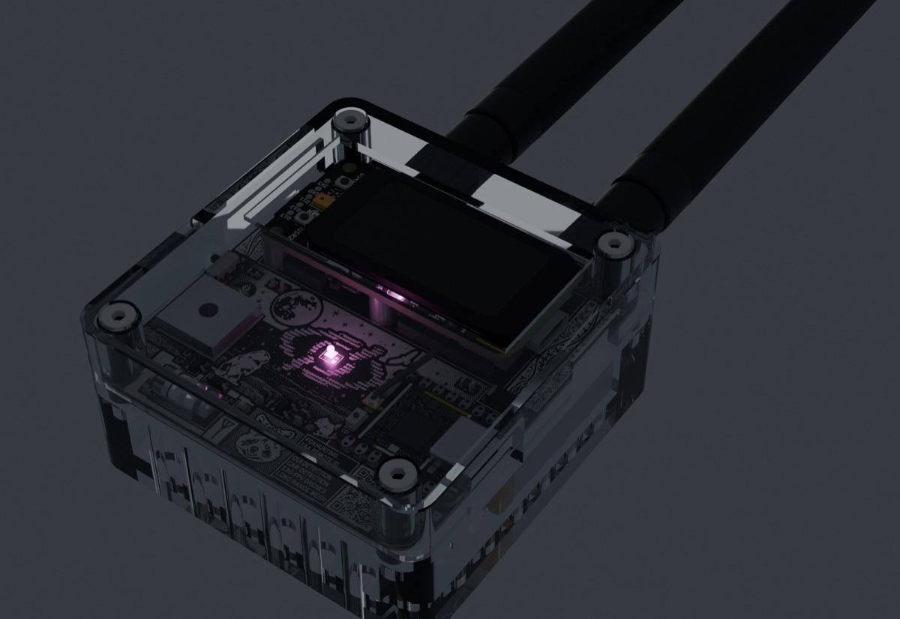

The OUI SPY Recon app is your OUI SPY's screen. Get it first.
Download for Android (APK)Android 9 or newer. The app updates itself from GitHub after that.
Pick what this OUI SPY will be, then install it over USB. You need:
An OUI SPY
The XIAO ESP32-S3 board.
A USB-C data cable
Charge-only cables show no port.
Chrome or Edge
On Windows, macOS or Linux. Phones can't install.
A remote node needs no phone: it reports over your fleet's long-range mesh to the board on your phone, and the app runs the whole fleet.
A fleet in three steps
- The board on your phone. Install OUI SPY for the app and pair it (Bluetooth PIN 123456). In the app, Fleet > Board > Mesh: type a fleet key (any 8 to 63 characters, no spaces) and switch the mesh on. Then make it the home: Fleet > Control > Home node.
- Every other board. Pick its job here (Detector, Sky-Spy or Wardriver), install it, and set it up on the same channel with the same fleet key.
- Run them all from the app. Fleet lists every node. Filters and firmware updates reach them over the mesh.
Plug it in
Plug the OUI SPY into your computer with a USB-C data cable.
Connect
Click Connect and pick the OUI SPY's port in the list. It usually reads USB JTAG/serial debug unit.
No port in the list? Unplug the OUI SPY, hold BOOT while you plug it back in, let go, and click Connect again.
Install
Choose Install OUI SPY (app version). On a first install tick Erase device, then click Install. Leave it plugged in until it says Installation complete, about a minute.
Right after the install, this puts the remote node on your fleet's mesh over the same USB cable: its channel, the fleet key and its name.
Close the installer
Close the install dialog so the port is free. Leave the node plugged in.
Put it on the mesh
Setting up a node needs Web Serial: open this page in Chrome or Edge on a computer.
Run it from the app
Unplug it and put it where it should watch. The board on your phone, as the fleet's home (Fleet > Control > Home node), lists it under Fleet once it hears it: its detections on the map, filters sent to it, and its firmware updated over the mesh (Fleet > Firmware). USB is only for this first install.
Pair it in the app
Unplug the OUI SPY and power it again, from the computer or any USB charger. Open the OUI SPY Recon app and pair the OUI SPY over Bluetooth: Settings > Connections > Board over Bluetooth.
Bluetooth PIN 123456
The app asks for it the first time. To change it, type blepin and six new digits (not starting with 0) in the app's Console while the board is on USB.
Updates come over the air
Later firmware updates come from the app, over the air. USB is only for this first install.
No port in the list
Try another cable: charge-only cables show no port. Then unplug the OUI SPY, hold BOOT while you plug it back in, let go, and click Connect again.
On Linux
If Connect lists no port or the port won't open, add your user to the dialout group (uucp on Arch), then log out and back in.
The install stopped partway
Hold BOOT while you plug the OUI SPY back in, then install again with Erase device ticked.
The app can't find it
Unplug it and plug it back in so it starts the new firmware, and keep it near your phone or computer.
The remote node won't take its setup
Close the install dialog first: the port has to be free. A Sky-Spy or a locked node already on a mesh starts straight in the mesh and takes no setup: hold BOOT 1.5 s while you power it on, or install it again with Erase device ticked, then set it up again.
A remote node doesn't show up in the app
It needs the same channel and the same fleet key as the board on your phone: the fingerprints in Fleet must match. The board on your phone must be the fleet's home (Fleet > Control > Home node).

[ COMING ]OUI SPY Recon
The OUI SPY Recon adds a screen, a second radio chip for 5 GHz Wi-Fi, 802.15.4 and 5.8 GHz FPV video, and Grove sensors. It is also the home of the mesh.
- WiGLE, the wardriving database the app uploads to. Mastodon · GitHub
- NitekryDPaul, for the many OUI submissions: nite-oui-collection. X · GitHub
- cybertiger at the EFF. Bluesky · GitHub
- DeFlock Joplin, for the wildcard probe-request detection research. deflockjoplin.today · Bluesky
- Joe “The Mayor” Helle, for help with the Android app. X · GitHub
- Konrad Iturbe (KonradIT), for the C5VRX link mode the Recon's FPV video runs on. konraditurbe.dev · Bluesky · GitHub
Shout-outs to the wrew (Mastodon · wrewtopia.com), dz_az and h4d35x0 (GitHub · h4d35x0.com).
For research purposes only. Use at your own risk: you assume all responsibility for how you use it, and the authors accept no liability. Provided as is, with no warranty. Follow your local laws, and don't do anything illegal or stupid.